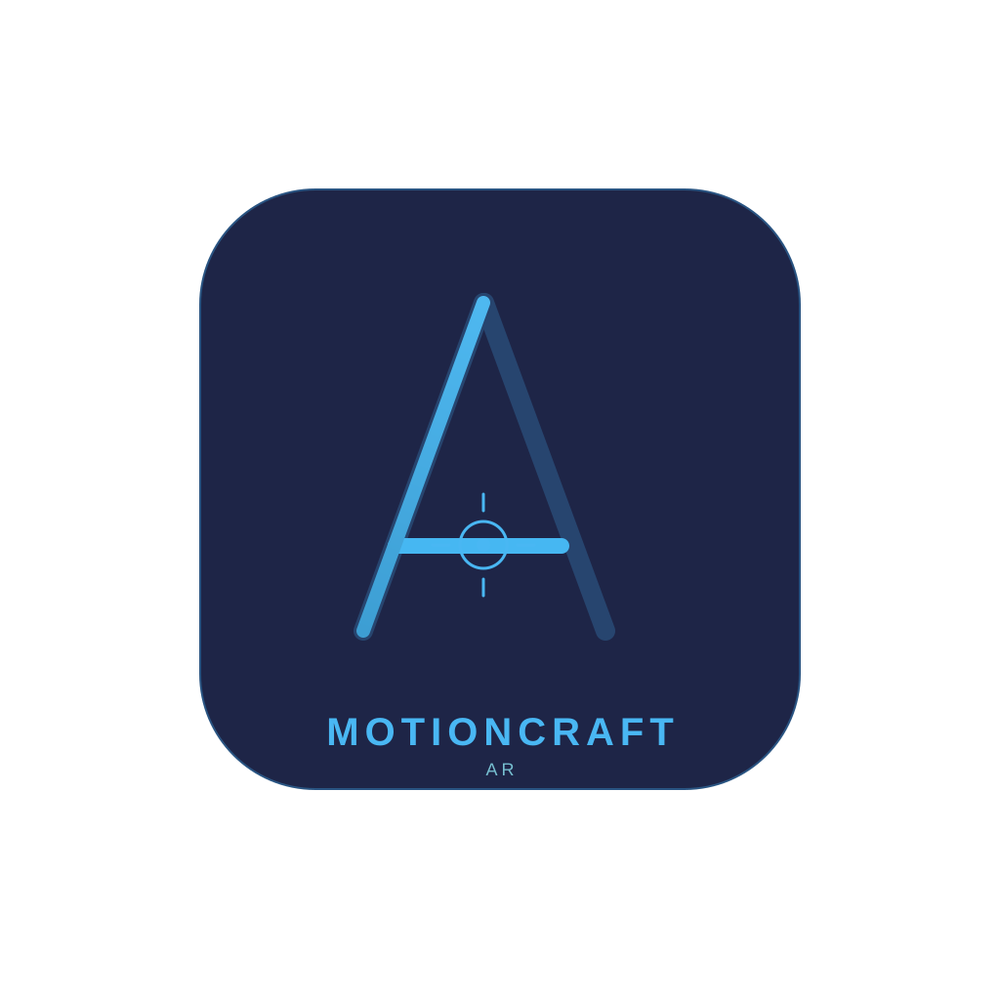
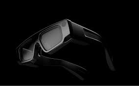
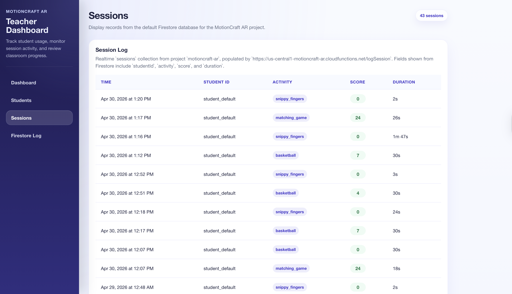
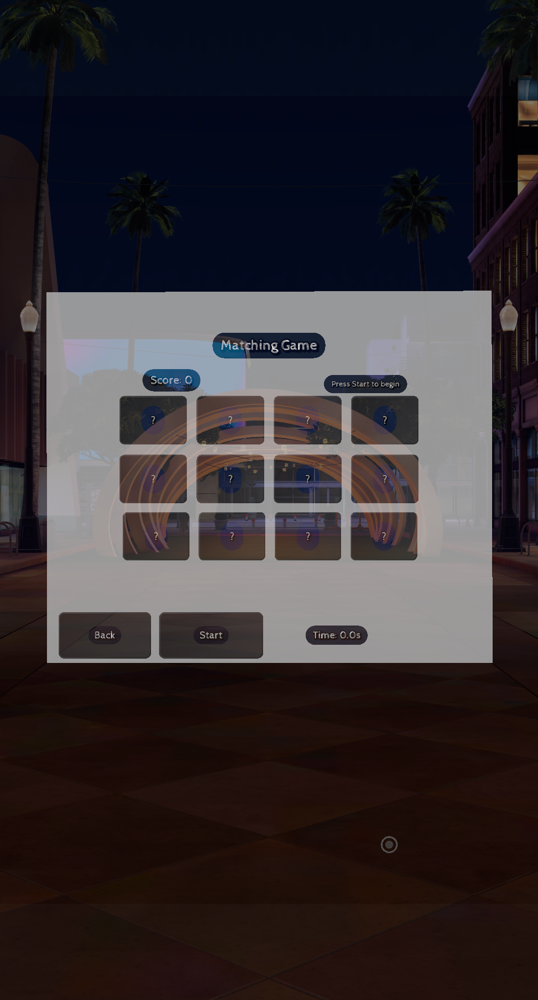
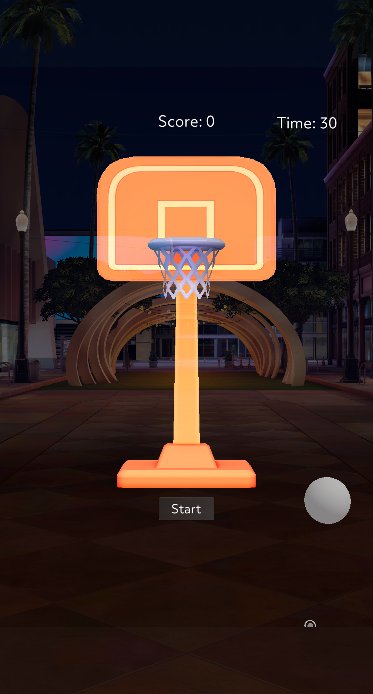

Problem
Early elementary classrooms need engaging ways to support motor development without creating extra manual tracking work for teachers.
Gesture-based augmented reality for fine motor skill practice in early elementary classrooms.
Let's connectFeatured AR Project
MotionCraft AR is a Snap Spectacles experience built to help K–2 students practice fine motor skills through guided, gesture-based activities that feel playful while producing useful classroom progress data.

Early elementary classrooms need engaging ways to support motor development without creating extra manual tracking work for teachers.
I prototyped the Spectacles lens in Lens Studio using TypeScript, pairing hand-motion interactions with Firebase-backed session records.
A React dashboard translates student sessions into progress snapshots so educators can review engagement patterns across exercises.
Hardware
MotionCraft AR targets Snap Spectacles hardware, giving students a hands-free way to interact with classroom activities through wearable augmented reality.

Team
MotionCraft AR was built as a classroom-focused AR project combining interaction design, education technology, and real-time progress tracking.
Developer and designer for the MotionCraft AR Spectacles prototype, Firebase session pipeline, and teacher dashboard experience.
Project Idea
MotionCraft AR uses short, repeatable AR activities to turn fine motor skill practice into measurable classroom sessions. Students interact with virtual objects through hand movement, while teachers can review activity type, score, duration, and engagement data from a dashboard.
Activities are designed to be simple enough for K–2 students to start quickly, with visual targets that encourage reaching, selecting, aiming, tracing, and controlled movement.
Session records give educators a lightweight way to monitor participation and progress without interrupting class flow.
The data model focuses on anonymized student IDs, activity names, scores, and durations instead of unnecessary personal information.
Conceptual Designs
The concept explores two complementary activity types: matching and basketball. Matching emphasizes controlled selection and recall, while basketball emphasizes aiming, timing, and repeat attempts.
A grid of concealed cards supports scanning, selection, and repeated gesture control. The interface tracks completion time and score for each session.
A virtual hoop and ball create an aiming task where students practice hand positioning, movement control, and repeated motor planning.
A scissor-gesture activity where young learners practice opening and closing their fingers like scissors to snip objects on screen. Kids cut along dotted lines or snip falling shapes while getting real-time visual feedback through Snap Spectacles.
An AR handwriting-readiness activity that guides K–2 students through tracing uppercase and lowercase letters in mid-air, using hand tracking to build muscle memory and stroke sequencing for pencil-and-paper writing.
Demo
This demo shows the MotionCraft AR experience in action, including how the activities and classroom dashboard fit together.
Screenshots
These screens show the teacher dashboard session log and two AR activities from the MotionCraft experience.


